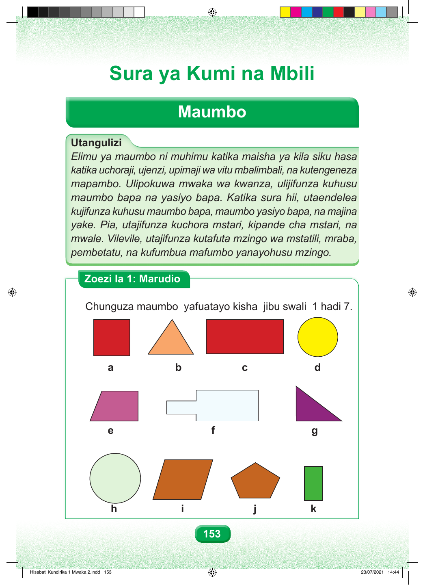

Sura ya Kumi na Mbili Maumbo Utangulizi Elimu ya maumbo ni muhimu katika maisha ya kila siku hasa katika uchoraji, ujenzi, upimaji wa vitu mbalimbali, na kutengeneza mapambo. Ulipokuwa mwaka wa kwanza, ulijifunza kuhusu maumbo bapa na yasiyo bapa. Katika sura hii, utaendelea kujifunza kuhusu maumbo bapa, maumbo yasiyo bapa, na majina yake. Pia, utajifunza kuchora mstari, kipande cha mstari, na mwale. Vilevile, utajifunza kutafuta mzingo wa mstatili, mraba, pembetatu, na kufumbua mafumbo yanayohusu mzingo. Zoezi la 1: Marudio Chunguza maumbo yafuatayo kisha jibu swali 1 hadi 7. a b c d e f g h i j k 153 Hisabati Kundirika 1 Mwaka 2.indd 153 23/07/2021 14:44